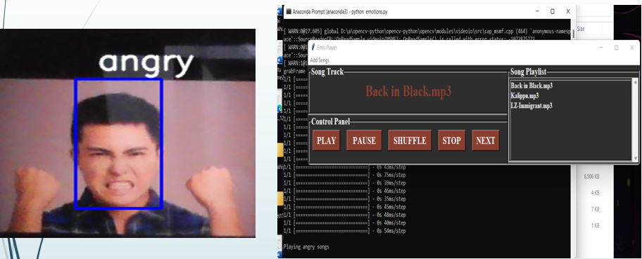

Description:
The goal of this work is to build an emotion detect system which can analyze basic facial expression of human.
In this project a method is presented for mood detection based on humans face emotions.
The proposed method used the humans face to identify the mood of that human and finally using this result play the audio file which related to human’s emotion.
Firstly system takes the human face as input then the further process will going on. Face detection and eye detection is carried out.
After that using feature extraction technique to recognize the human face. This method helps to recognize the human’s emotion using feature of face image.
Through the feature extraction of lip, mouth, and eyes, eyebrow, those feature points are found. If the input face wills matches exactly to the emotions base dataset face then
we can identify the humans exact emotion to play the emotion related audio file also and also we will imitate the expression on a robotic head which will adapt the expression detected.
Recognition under different environmental conditions can be achieved by training on limited number of characteristics faces. The proposed approach is simple, efficient, and accurate.
System play's very important role in recognition and detection related field.
Role & Responsibilities:
Analyzed the requirements and feasibility of implementation, coding and testing
